Bias Against Asia Seen in Opposing Stories of SILENT HILL 4's Development
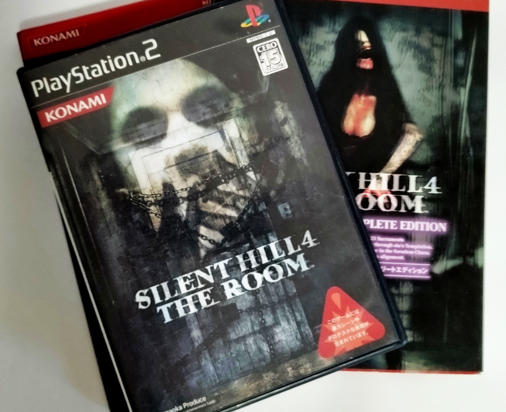
English Journalism and Orientalism in Gaming Media
This article mirrors the version on Medium.

This copy is provided as a backup and for easier access. If you cite or quote this, please refer to the Medium version.

As a fan of the Japanese-developed game “Silent Hill 4,” I have looked into and compared the interview articles because only interviews published in English by two European media outlets over twenty years ago claimed that the devs said completely different things. Because of this, the game was criticized even by fans of the series, and those same English articles are still treated as correct information on places like Wikipedia and Fandom wikis even now, twenty years later.
As a result, one outlet, Eurogamer, had the same writer increasing the numbers compared to a month before and saying they “which to us seemed excessive” (at this point, this article has no credibility), and those numbers matched while the writing style was somehow even similar to that of the other outlet, Boomtown.

To begin with, both claimed double the average number of enemies defeated, and although both were face-to-face interview articles, there were no photos of the devs, and it was full of suspicious points. The Q&A content in both articles was also nearly identical, with each outlet rearranging and adding to it in their own way.
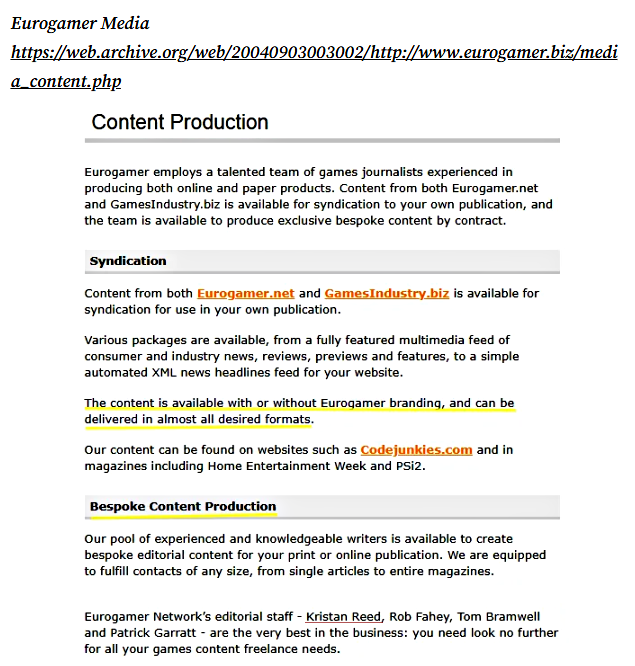
Since it has been confirmed that the devs were there locally at the time, the interview itself most likely did happen. But, because Eurogamer was running a content distribution service at the time, I came to suspect that they may have adapted the material for their own interview, and may also have provided it to the now-defunct smaller outlet Boomtown.
I published the details on DeviantArt , but have also imported a copy here.
![[Silent Hill 4] The Dubious Roots of the Room 302 Theory](../img/m01.png)
There are many other strange parts to these English articles as well, but what I kept wondering was why nobody had pointed out these issues over the last twenty years, why so many Western media outlets spread the information without verifying it, and why Western fans still believe and use those articles as sources over official information. I have presented both these points and the official information to multiple people, including Wikipedia editors and wiki admin, but nothing has changed even now.
That led me to think that perhaps they simply don’t question English-language articles, and that they may not have the mindset many Japanese people naturally have: that English-language media tends to look down on Asia. So this time, I decided to write about that.
To be clear, this isn’t about arguing over discrimination or political correctness. I’m also trying to write this in a way that people outside the game fandom can understand.
When Honda Wins, the Regulations Change the Following Year
This isn’t about video games but about Formula One (F1). Since the 1960s, Honda has faced repeated backlash while competing in Europe. In Japan, the saying “when Honda wins, the regulations change the following year” used to be so well known that even people with no interest in F1 had heard of it. Similar stories can be heard in the Olympics and other sports as well.
In English, when rules are changed after Asian teams become too dominant, it’s often spun in the exact opposite way, with people saying things like “correcting a technological imbalance.”
For example, even the same episode can be turned into completely opposite stories depending on the language and perspective.
Number Web Masahiro Owari “F1 pit stop”
https://number.bunshun.jp/articles/-/865560?page=2
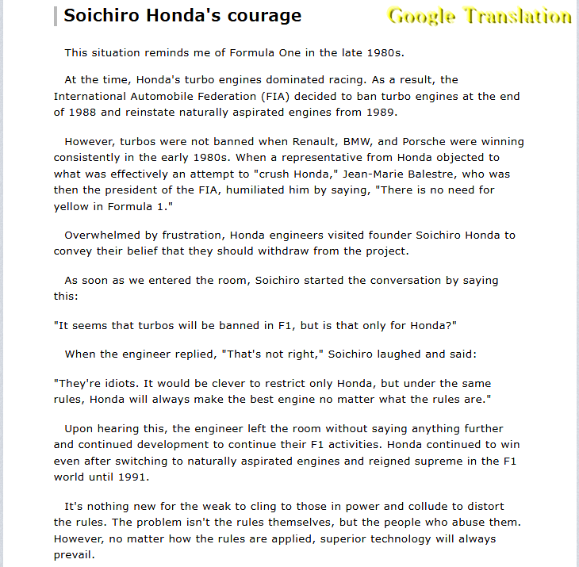
Wikipedia
https://en.wikipedia.org/wiki/Jean-Marie_Balestre
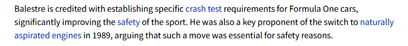
Of course, I think Honda also exaggerates certain parts of the story. But at the very least, in Japanese sources, the names of the people who were subjected to discriminatory remarks and the details of what happened are still recorded. In English, but, there’s almost no trace of it. Instead, the FIA president is praised for his contributions to safety.
For example, in recent years, there have been cases like this in soccer as well. The kind of treatment by mainly European media that is often referred to as “Asian Passing,” in which Asian players are ignored, is well known not only in Japan, but also in China, South Korea, and other parts of Asia. But Western fans are probably unaware of it.
Stories like this have been repeated since before I was born, so Japanese people grow up naturally thinking, “that’s just how things are.” In the same way, across many different fields, people in Japan have long said, “In interviews with Western media, Japanese people can end up being written about unfairly or portrayed in a mean-spirited way because they’re assumed not to understand English well or not to complain.”
One reason Japanese people often don’t protest is because Japan traditionally has a value system that sees “quietly proving yourself through results instead of making a public scene” as the more mature response, much like how the Honda story above was turned into a noble tale. In recent years, but more people in Japan have started to realize that this attitude can be interpreted in the exact opposite way internationally.
On the other hand, the media conducting these interviews will never openly say things like, “we wrote carelessly because Japanese people don’t understand English and won’t complain,” or “we manipulated the text to give a mean-spirited impression.” They probably have their own perspective and justification. Because of that, I think English-speaking readers rarely get the chance to really think about the fact that articles are filtered through the perspective of the journalist.
If an English-speaking reader comes across an article that Japanese readers would feel was written in a hostile or unfair way, they might unconsciously think things like, “This Asian company sounds arrogant,” or “That’s a strange thing to say, but I guess they’re Asian,” and accept it through preexisting biases about Japan or Asia. The possibility that the journalist’s spin shaped that impression probably doesn’t even occur to them.
On top of that, because they’re unfamiliar with the Japanese value system that encourages staying quiet instead of publicly arguing, there were probably cases where silence was misunderstood as agreement.
Cultural gaps like this have gradually started to change in recent years because more people are willing to speak up, and because the internet now allows both sides to be heard in real time. But the case I am discussing here comes from articles published more than twenty years ago.
Completely Opposite Development Stories
Back to the game itself.
The first major clash between the European articles and the Japanese side is the story of how the game was developed.
According to the official information, after Silent Hill 2 ended, the team split into Silent Hill 3 and Silent Hill 4, and Silent Hill 4 was created from scratch as a new Silent Hill series. It was given the subtitle “THE ROOM” so that new players could pick it up more easily. Multiple Japanese devs have said this consistently for years.
Official Website:
Konami SILENT HILL 4 THE ROOM, Developer’s Voice”Vol. 2: “The Terror of the Room” Director and Scenario: Suguru Murakoshi
https://web.archive.org/web/20041025135039/http://www.konamityo.com/sh4/02roomq.html
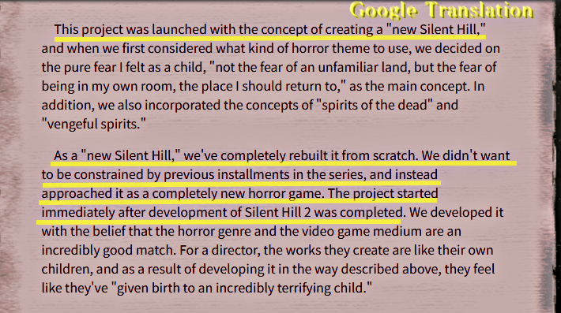
[Google] This project was launched with the concept of creating a “new Silent Hill,” and when we first considered what kind of horror theme to use, we decided on the pure fear I felt as a child, “not the fear of an unfamiliar land, but the fear of being in my own room, the place I should return to,” as the main concept. In addition, we also incorporated the concepts of “spirits of the dead” and “vengeful spirits.”
As a “new Silent Hill,” we’ve completely rebuilt it from scratch. We didn’t want to be constrained by previous installments in the series, and instead approached it as a completely new horror game. The project started immediately after development of Silent Hill 2 was completed.
Silent Hill 4 The Room Official Guide Complete Edition, p.220 (First edition, July 20, 2004)
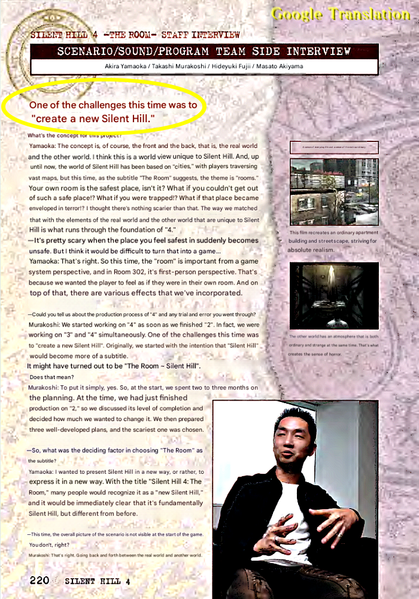
The two European articles, on the other hand, claimed this:
“Silent Hill 4 was originally developed as a spin-off called Room 302, but was later forced into the Silent Hill series (for commercial reasons).”
Eurogamer: Kristan Reed “Silent Hill 4: Two Guys In A Room Interview” August 25, 2004
https://web.archive.org/web/20040917215449/https://www.eurogamer.net/article.php?article_id=56424
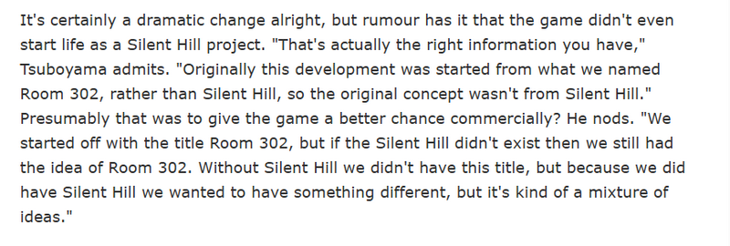
It’s certainly a dramatic change alright, but rumour has it that the game didn’t even start life as a Silent Hill project. “That’s actually the right information you have,” Tsuboyama admits. “Originally this development was started from what we named Room 302, rather than Silent Hill, so the original concept wasn’t from Silent Hill.” Presumably that was to give the game a better chance commercially? He nods. “We started off with the title Room 302, but if the Silent Hill didn’t exist then we still had the idea of Room 302. Without Silent Hill we didn’t have this title, but because we did have Silent Hill we wanted to have something different, but it’s kind of a mixture of ideas.”
Boomtown: David Jenkins “Silent Hill 4: The Room interview” August 31, 2004
https://web.archive.org/web/20041216065301/http://ps2.boomtown.net/en_uk/articles/art.view.php?id=6037
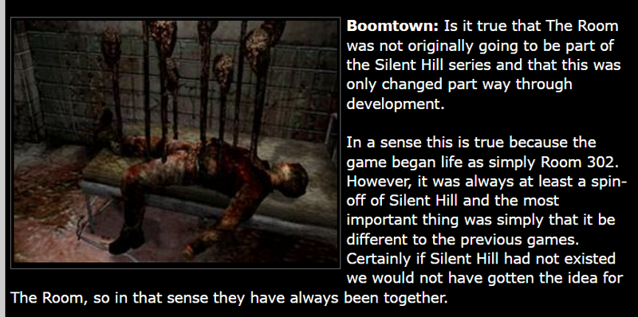
Boomtown: Is it true that The Room was not originally going to be part of the Silent Hill series and that this was only changed part way through development.
In a sense this is true because the game began life as simply Room 302. However, it was always at least a spin-off of Silent Hill and the most important thing was simply that it be different to the previous games. Certainly if Silent Hill had not existed we would not have gotten the idea for The Room, so in that sense they have always been together.
This isn’t just a mistranslation or a minor mistake. It’s a completely different story.
It also turns Silent Hill 4 into a pretty negative confession from the devs themselves. That’s probably why it spread so quickly in English-speaking communities at the time. The articles also came out right before the Western release of the game. For longtime series fans waiting for release, it sounded insulting, so it isn’t surprising that more antis started appearing because of it.
In Japan, though, only official information from Japanese devs speaking in their native language, along with coverage and interviews based on that, existed, so I had no idea about this for a long time.
The first people who told me about these theories were actually haters from Europe, haha. Some of them had never even played the game and still brought hose two articles up while repeating things they’d heard from others. I’ve also heard it from regular fans, not just haters.
I was honestly surprised when overseas fans I talked to in recent years all knew this unfamiliar version of the story. Many of them trusted the English version more than the official Japanese one simply because “it came from two English interviews, including one from a major site,” and that is what eventually led me to start examining the articles themselves. That’s the story I mentioned earlier.
There’re other suspicious things too.
The Tone of the Articles Does Not Match the Importance of the Information
This statement was a rare piece of information and a confession that the devs had never said anywhere else in the past twenty years, which was told only to these two outlets.
Even much larger American gaming media outlets, like IGN, which later acquired Eurogamer’s parent company, never managed to get a quote like this from the devs, either back then or now!
If writers really got the devs to admit something this huge right before release, you would expect them to push it hard with things like “first revealed here!” or “exclusive confession!”
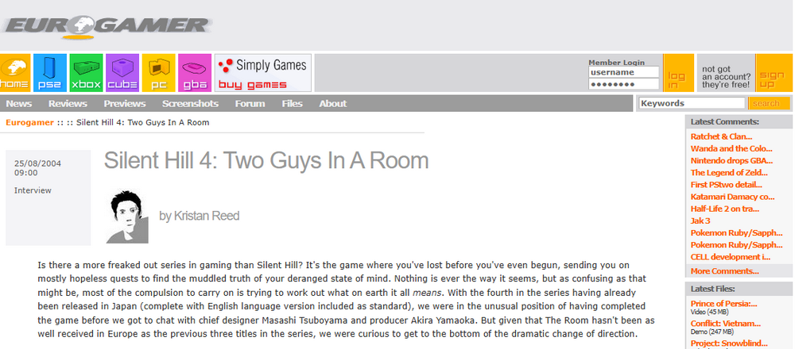
Especially for a small site like Boomtown, which no longer even exists, this should have been an enormous scoop. Yet there’s nothing in the title or headings trying to sell it that way.
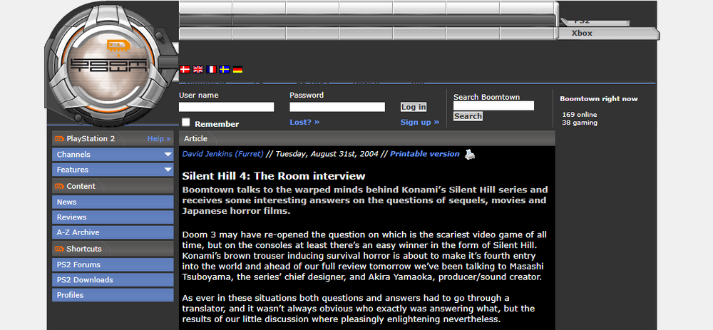
More importantly, neither article explains where the writers even heard this story in the first place. The devs being interviewed should have asked that too. This was information that had never even leaked in Japan, yet somehow only two media outlets on the other side of the world had it. And the devs supposedly confirmed it as fact.
Yet in both articles, the writers and devs talk about this massive scoop completely casually, like it was already common knowledge. My guess is that they slipped the story in naturally and made it look like something officially acknowledged by the devs, while still wanting it to spread as sensational insider information. And it actually worked.
As a way of presenting information, the Eurogamer writer had done something similar before.
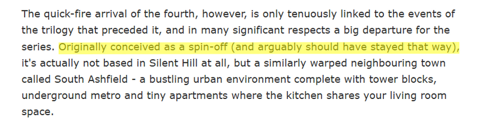
Originally conceived as a spin-off (and arguably should have stayed that way),
That line also doesn’t match the official development history, and there’s no source attached to it. But if you just read the sentence by itself, it sounds like accepted common knowledge. People really do leave details out like that sometimes.
By writing things this way, it creates the impression that the writer is casually reaffirming already-known information, while quietly turning it into an established fact. If you aren’t deeply familiar with the subject, you will probably believe it.
What Benefit Would There Even Be in Telling You?
Even if it were true that the game had been forced into the series for commercial reasons, there would be no benefit in confessing that only to foreign writers they barely knew. It’s negative information. Normally you would hide it. If they were fine with it becoming public, they would have openly talked about it in Japan and America too.
The fact that nobody questioned this may come from the writers themselves, and the readers as well, never doubting that they naturally deserved special access. To be fair, maybe I would have believed it too if it had come from a major Japanese game magazine like Famitsu.
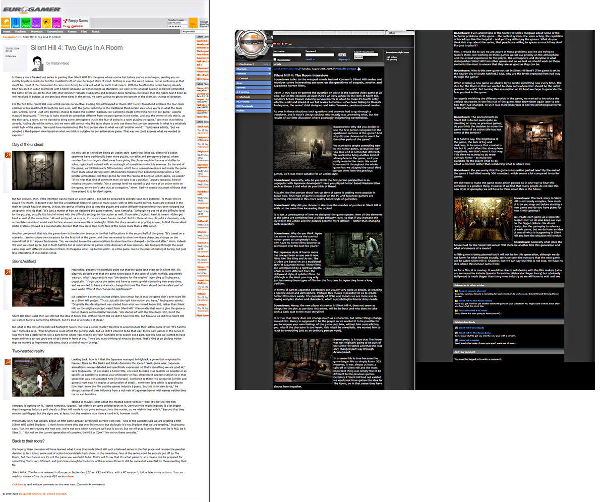
The Cleverness of the Interviews
This also connects to the previous point, but in these articles, an unsourced rumor is treated as if the devs confirmed it, while the writers themselves stay in a safe position.
In the Eurogamer article, other paragraphs write that the devs “says” things, yet around this specific point, the wording suddenly changes to “admits” or “nods.” In the Boomtown article, it doesn’t even say who made the statement.
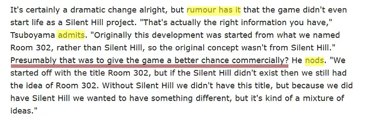
If you write “they said it,” the devs can respond with “No, we didn’t.” But if you write “they admitted it” or “they nodded,” things become much blurrier, especially through an interpreter.
Even the people being interviewed might start wondering if they accidentally nodded at the wrong moment. That makes it much harder to deny afterward. It feels exactly like the kind of thing people in Japan have warned about for years: “Japanese people don’t understand English well and they don’t protest.”
Even if this were just a mistranslation, “we created it from scratch as a new entry in the series” doesn’t suddenly become “we incorporated it into the series to give it a better chance commercially.” It wouldn’t be strange for it to be criticized as an intentional and malicious mistranslation.
If the articles diverge this strongly from the official information, then the writers and translations should be the parts getting questioned. Instead, English-speaking readers trusted the articles, believed the devs had honestly confessed, and attacked the game over it. Many of those same people claim to respect creators, yet they never question the English articles themselves. I think that is because they don’t recognize the bias built into their own language environment.
This Writer Is Signaling Something
What is interesting is that the Boomtown article, which from the flow of things seems to have received material from Eurogamer, is actually less extreme in its wording. Even though both supposedly conducted the same interview, Boomtown avoids phrases like “better chance commercially” and only talks about the game changing from a spin-off into part of the series. The vagueness around who actually said what also feels intentional.
Then there is this:
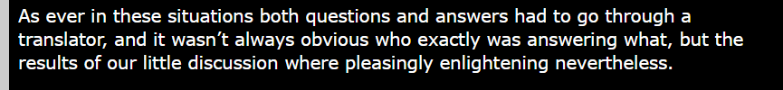
As ever in these situations both questions and answers had to go through a translator, and it wasn’t always obvious who exactly was answering what, but the results of our little discussion where pleasingly enlightening nevertheless.
This wasn’t a large group discussion. It was supposedly a face-to-face interview with an interpreter present, so it makes no sense for the writer not to know who was speaking. It almost feels like they were working from notes they had received afterward, or trying to hide the bad fact that the information came indirectly and the source of each statement was unclear.
Why Did People Believe It?
From the obvious discrepancies in the numbers I pointed out on DeviantArt, to the strange way the information itself was presented, I genuinely don’t understand why nobody thought any of this was suspicious, or why English-speaking readers believed it for so long. I also don’t understand why many still support it even after official information has been shown to them.
In the end, the only explanation that makes sense to me is that there was a bias of “it must be true because it is written in English,” combined with “they are Asian devs, so it would not be strange for them to say self-destructive things about their own game before release.”
If a Japanese media outlet published an article claiming that a white creator had privately confessed negative information only to some random Japanese writer through an interpreter, and there were no photos or proof, people would immediately question the media outlet and ask for evidence.
But when the situation is reversed, people living in an English-centered media environment often don’t question the media itself. And because it was written in English, these claims are still sitting on Wikipedia and fan wikis twenty years later while ignoring the official Japanese information.
Over those twenty years, the claims were picked up and spread by other outlets as well. This shows that they also never checked the original Japanese official material for themselves.
So I don’t think this became established only because of the writers. There was also an environment willing to accept it.
In the End, It Only Hurt the Game
These articles brought absolutely no promotional benefit to Silent Hill 4. Fans who believed them came to dislike the game as something that had been forcibly shoved into the series, and some people still criticize it for that even now.
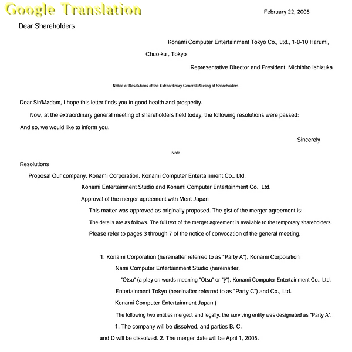
I don’t know how much influence these articles actually had behind the scenes, but it’s a historical fact that the company the development team belonged to, “Konami Computer Entertainment Tokyo Co., Ltd.” was absorbed into its parent company the following spring. The team ended up being dissolved, and the numbered entries stopped with this very entry, Silent Hill 4, with later games being developed overseas instead.
More than ten years later, the Silent Hill series has recently restarted, but Silent Hill 5 still hasn’t appeared.
At the same time, especially in English-speaking communities, the old development “Team Silent” has become something of a myth, and even now I still see people saying they want them to come back.
Like this:
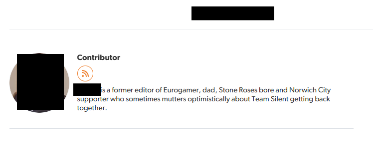